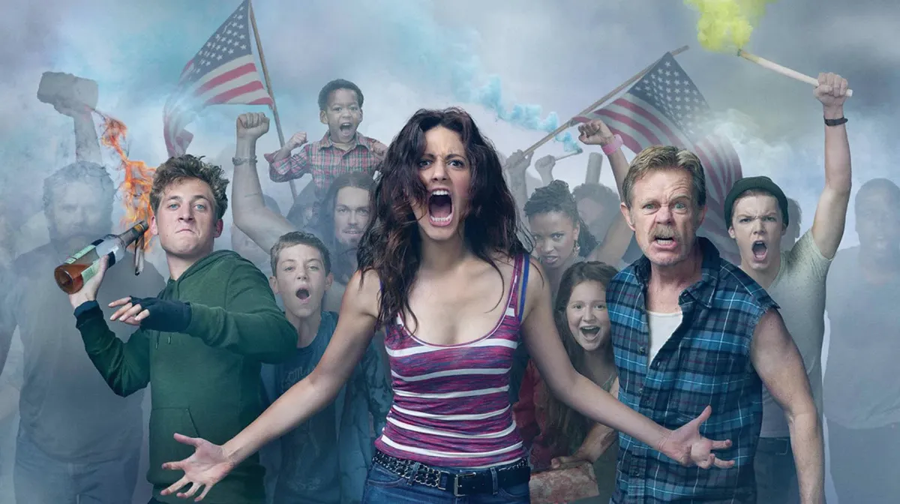
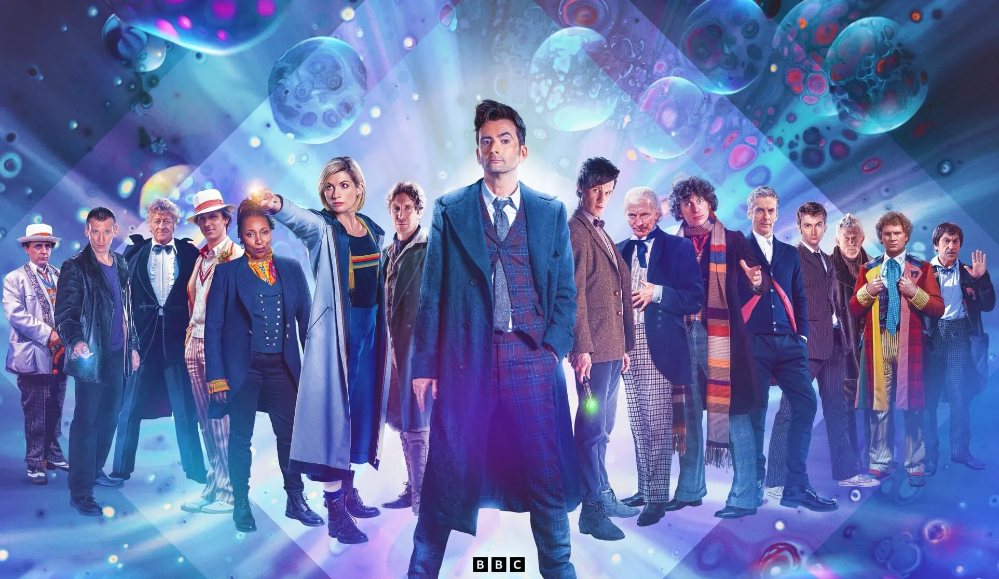

Meu nome e Karoline de Souza Padilha faço aniversário dia 08/06/2006 tenho 18 anos tenho um irmao e duas irmas moro com a minha mãe
eu quero trabalhar pra pericia criminal e ou vou fazer biomedicina ou vou fazer farmacia pra conseguir isso vou falar um pouco de biomedicina
e do pq ela e boa pra prericia A biomedicina é benéfica para a perícia por oferecer conhecimento avançado em análises laboratoriais, essenciais
para a identificação de substâncias e agentes patogênicos. agora o do porque a farmacia e boa para a pericia A farmácia é benéfica para a perícia
criminal porque fornece conhecimento profundo sobre substâncias químicas, drogas e seus efeitos no corpo humano. por isso vou escolher um dos dois
porque ta na area da pericia. Eu tenho uma amizade de 7 anos que nos de conhese so que ele não estuda mais pra ca mais nos ainda conversa, eu ja
tive um hamster de estimacao que se chamava Theodor miranha e tive uma gata que se chamava magali munha cor preferida e bege e roxo gosto fe croche
e de fazer presente feito a mão eu estudo no colégio São Pedro to aqui des do primeiro ano.
Um pouco sobre o alura A Alura é uma plataforma online de cursos focada em tecnologia e desenvolvimento profissional, oferecendo aulas em áreas como
programação, design e marketing digital. Ela combina vídeos, exercícios práticos e suporte de instrutores para facilitar o aprendizado.
 essa serie eu gosto muito ja to na ultima temporada
 essa e a minha serie favorita ja assisti um monte de vez e nunca me enjoo
 esse desenho e legal apesar das besteiras que eles falam
esse desenho e legal apesar das besteiras que eles falam